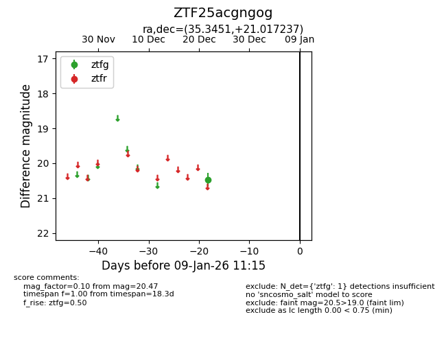
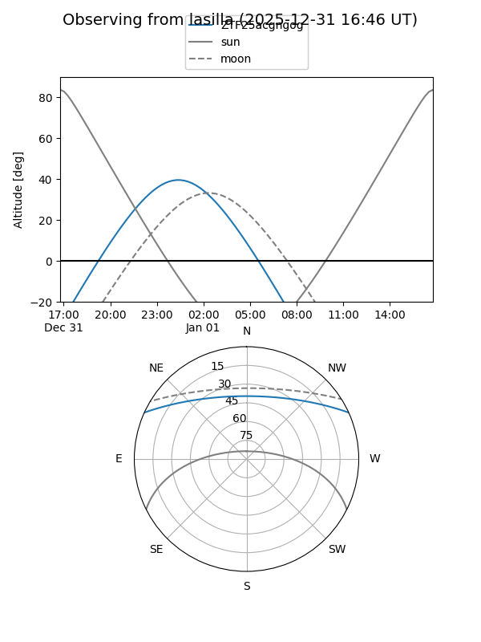
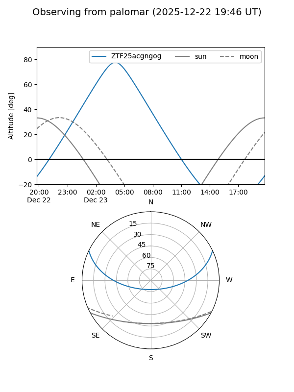

ZTF25acgngog
Target ZTF25acgngog at 2025-12-31 18:00
Aliases and brokers:
FINK: link
Lasair: link
ALeRCE: link
alt names
ZTF25acgngog (ztf,fink_ztf)
Coordinates:
equatorial (ra, dec) = 35.3451,+21.01724
equatorial (HMS+DMS) = 02:21:22.82,+21:01:02.05
galactic (l, b) = (149.5463,-37.16281)
Flags:
Photometry:
last ztfg=20.47
1 ztfg detections
Lightcurve

Visibility


Additional plots